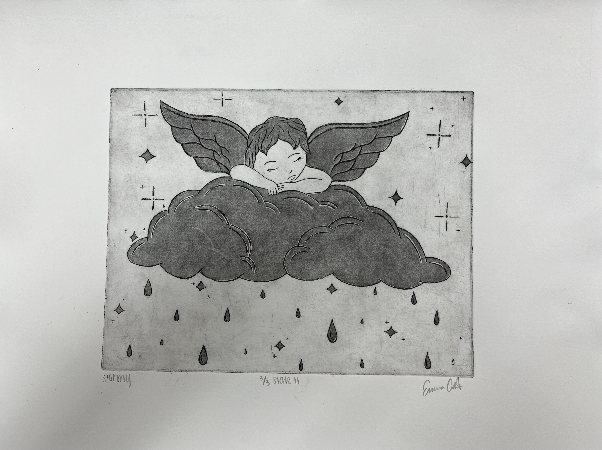
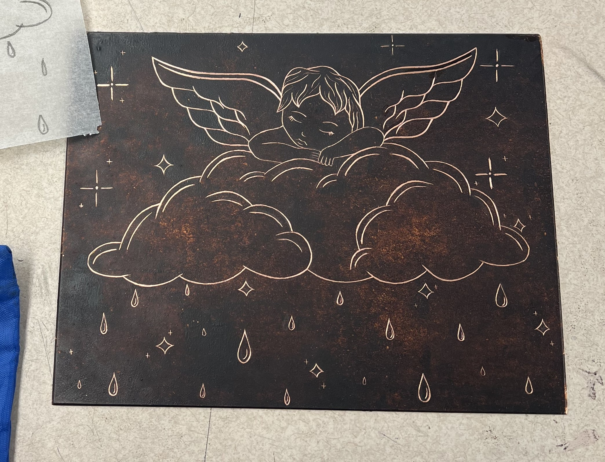
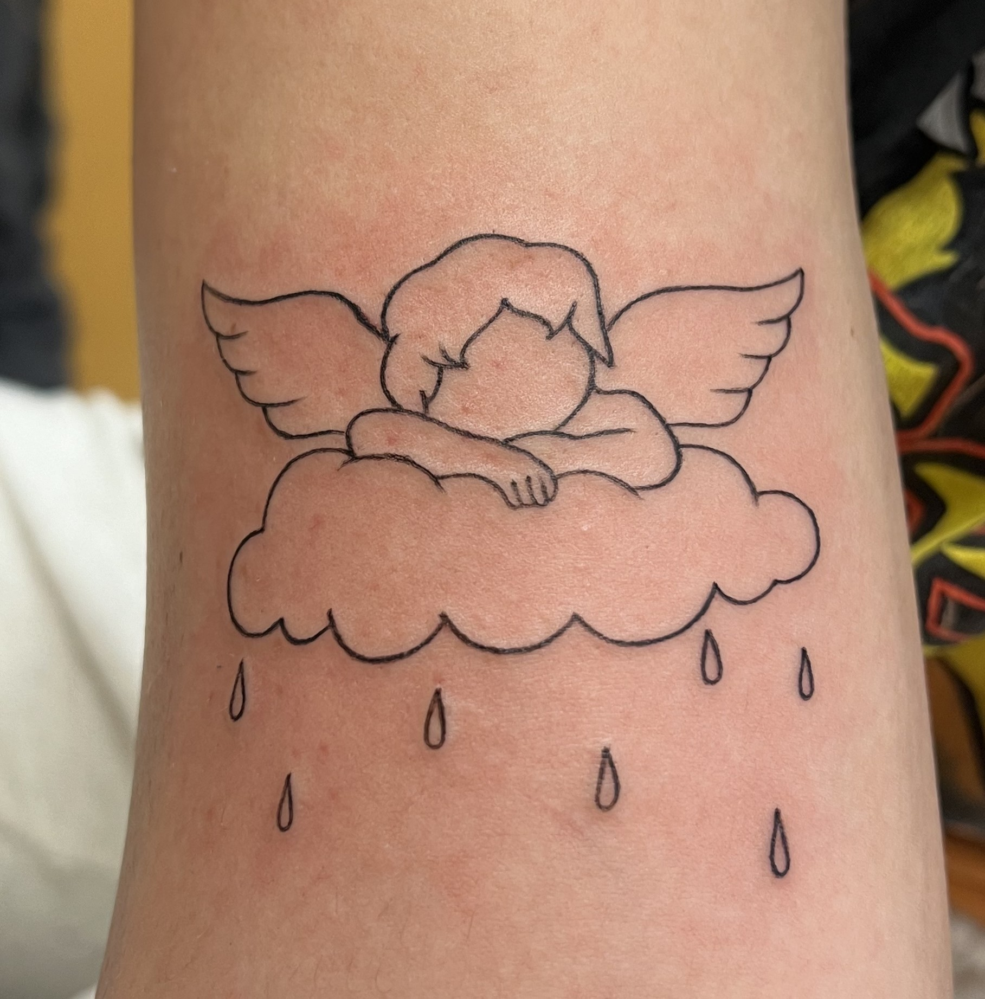

This project is so dear to me, this is an intaglio print that I made in Printmaking with Professor Johanna Paas. I decided to take a design from my own tattoo that I made in remembrance of my dog, Stormy, that passed. I took my tattoo design and further developed the idea into a more detailed drawing and composition and made two separate stages of intaglio prints with it. Intaglio is the process of exposing a copper plate to acid in order to etch it and make the design. I loved this process and I am so happy with how my prints turned out.

